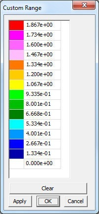

CAE Settings
This section helps user to edit, modify, update and display Legend information.
Legend Settings
To edit min and max of Legend values and to apply for current or all frames.
Edit Legend
To modify number of colors, precision values and display format.
Hotspot Finder
To set up hotspot finder constraints.
Vector Plot Settings
To modify settings for Vector Plot
Note:
Vector Plot features are available from 2010 R1 Version on wards and requires license. Contact sales@vcollab.com to upgrade these features.
How to update Legend?
Click with the right most button in the Viewer Window, to pop up the Viewer Context menu and then follow the instructions as below.
Change Range User can change min & max values. Min Enables to modify min value in the range. Max Enables to modify max value in the range. Filter Applies the palette colors only for the values with in the min max range. Out of bound values are applied with filter color Filter Parts If true, Parts beyond result range will be hidden All Instances Applies the min/max changes to all instances. Color Plot Applies the changes to current instance of current result. Min&Max Applies the changes to all instances of current result. Update Color Plot on Show/Hide Parts Updates color palette and its values while hiding / showing parts. Apply Applies the modifications.
- Select ‘CAE Settings’ option from viewer context menu or click ICON .
- Select ‘Update Legend’ tab.
- Click Min and Max option and change the range if necessary.
- Click Filter color option to differentiate user defined range.
- Select a filter color which is different from colors in the palette.
- Click Filter Parts to hide parts which are beyond user range.
- Click All Instances option to update the changes to all instances.
- Click Min & Max option to display min and max value of current result as labels.
- Click Color Plot option to apply or remove color plot on the model.
- Click Update Visible Parts Color Plot to update the color palette and contour when modifying part visibility.
- Double click either on the viewer color palette or no result color box in the viewer to pop up this dialog.
How to edit Legend?
Click with the right most button in the Viewer Window, to pop up the Viewer Context menu and then follow the instructions as below.
Palette User can choose any number of colors to be applied on model Scientific Displays the legend values in scientific format Precision User can choose the decimal places for contour values Font Size Allows user to change the font size. Frame Info Displays/Hides frame information Placement Allows user to place the legend either in left or right or top or bottom. Undeformed Mesh Mode Allows user to set ‘Undeformed Mesh’ as Wire frame / Edges / Transparent / Transparent Edges Mode. Default is wire frame. Contour Lines Allows user to select contour lines color. Show Shows/Hides Legend palette. Reverse Reverses the legend values against color palette. Discrete Switches to discrete fringe bands in color plot. Update All Viewpoints Updates the changes to all available viewpoints. Custom Range Switches to user defined custom range palette and color plot. Apply Apply the changes in the viewer.

- Select ‘CAE Settings’ option from viewer context menu or click ICON .
- Select ‘Edit Legend’ tab.
- Click ‘Palette’ drop down to select number of colors.
- User can select predefined sets of color to view CAE results as he viewed in native CAE software.
- Click any color in the palette to change.
- Click ‘Scientific’ option to toggle display format between scientific and standard decimal mode. Default is Standard display format.
- Increase or decrease precision values for both scientific and standard display format.
- No Result color is grey by default. User can change it too.
- Click ‘Frame Info’ option to toggle displaying frame information in left bottom of viewer.
- Select left or right or top or bottom under placement dropdown to place the legend.
- Click Undeformed Mesh Mode drop down list.
- Select ‘Wire Frame’ to view ‘Undeformed mesh’ in Wire frame mode.
- Select ‘Transparent’ to view ‘Undeformed mesh’ in transparent mode.
- Select User Color or Palette Color option for contour lines.
- Click Discrete option to toggle between continuous or discrete color plot.
- Click ‘Apply’ button to apply the above changes.
Note:
Palette has predefined color sets for CAE files, which are supported by VMoveCAE as in native CAE software.
This helps user to view results of CAE files in VCollab Pro, same as he viewed in native software.
Double Clicking on legend color palette (including No Result color box) inside viewer using mouse left button pops up CAE Settings Dialog with ‘Edit Legend’ page.
What is custom range and how to use it?
Legend palette values are divided evenly by n number of colors. Here length of any two consecutive ranges is constant and interpolated linearly.
Custom range allows user to define any length for any range but with certain limitations.
- Length of any range should be less than length of min and max.
- User is not allowed to edit extreme values as it is possible in Legend settings.
- User modified value should be between predecessor and successor values.
- If there are blank in the palette values, it will be interpolated linearly by default.
Steps for Custom Range usage:
- Click ‘Custom Range’ option to enable.
- Click the button next to the option ‘Custom Range’.
- It pops up a dialog ‘Custom Range ‘ as below

- Change any value out of extremum values.

- Click ‘Apply’ button.
- It prompts with an warning message that values should be in descending order.
- Change some values and leave some blanks in the palette.
- Click ‘Apply’ and notice that blanks are filled by interpolation.
- Click ‘OK’
- Click ‘Apply’.
- Notice the changes in the color plot of model according to new custom range palette.

Hotspot Finder Panel
Find Allows user to select a mechanism either Hotspots or Min/Max Min Used to set user minimum of range. Max Used to set user maximum of range. Top Used to find thenumber of top result values. Bottom Used to find the number of bottom result values. All Top Includes all same top values and its IDs. All Bottom Includes all same bottom values and its IDs. Zone Radius Used to skip an area around already found hotspots. Visible Surfaces Considers visible labels only. Probe Label Settings Allows user to modify probe label settings. Pops up a detailed dialog. Compare Options This option is visible if at least one file is merged with existing one. It will pop a dialog with compare options. Add Viewpoints Generates viewpoints according to viewpoint options if enabled. Export Exports the viewpoints into either vpt file or Microsoft ppt file View Point Options Provides various options to include or exclude different type of viewpoints Find Hotspots Generates viewpoints for the model according to above information

Vector Plot

Vector Plot On/Off switch to plot vectors. Derived Vector Default derived vector for vector result is Translational and for tensor is Normals. Deformation Sets deformed nodal position as starting point of vector. Detach Geometry Allows user to display vector plot of a part, even if the geometry is hidden. Auto Scale Enables Auto Scale for vector plot Scale Slider Control Allows provides user unconstrained scaling up or down User Color Allows user to choose a color from palette for vector. Arrow Size Allows user to choose any one size out of three. Nodal Position As Allows user to set nodal position as either start point or end point Reverse Allows user to change the direction of vector Refresh Allows user to re-compute vector plot. The derived vectors are based on the type of result selected.
Result type Available Derived Vectors Scalar Normals (Nodal or Elemental) Vector Translational (Default) Six DOF Translational (Default)
Rotational
Both
Tensor Normals (Default)
Minimum Principal Direction
Middle Principal Direction
Maximum Principal Direction
Full Tensor
Note:
This Vector Plot needs a separate license file to get activated.